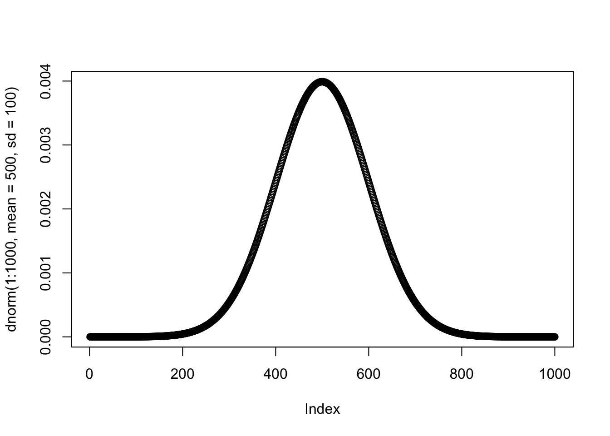
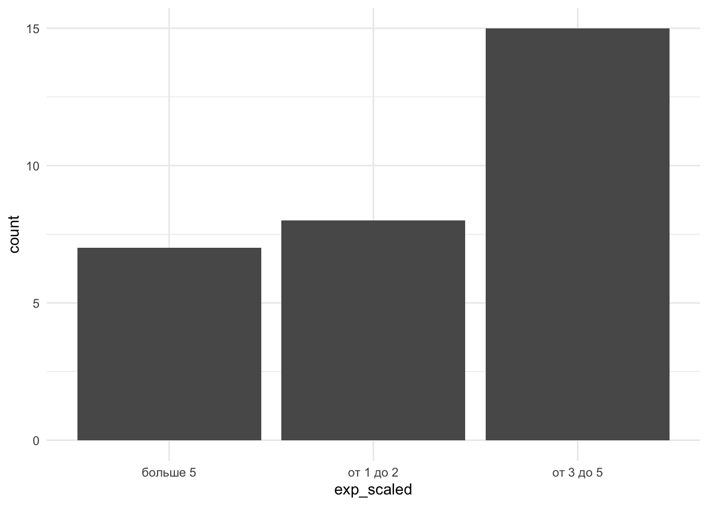
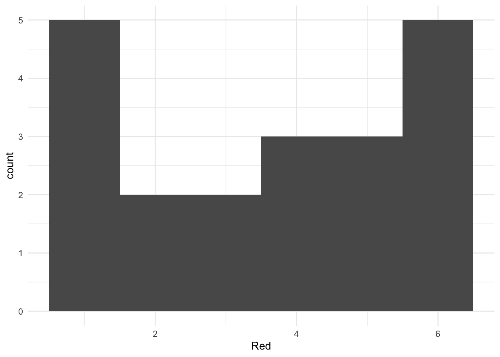

6 Описательная статистика
Мы переходим к обсуждению первого вида статистики из двух – описательной статистики (descriptive statistics). Когда мы гооворим об описательной статистике, мы всегда говорим об эмпричиески полученных данных, а не о генеральной совокупности. Чтобы что-то сказать о генеральной совокупности, нам нужно заниматься статистикой вывода, а пока остновимся на эмпирически полученных данных и выборочных распределениях.
Зачем нужна описательная статистика? Мы обсуждали, что описательная статистика:
- описывает данные: мы исследуем сами переменные, смотрим на данные по ним и узнаем их получше
- позволяет заменить набор данных на отдельные цифры – зачастую это проще для понимания и понятнее для восприятия, чем смотреть на табличку значений
Если вдруг так вышло, что наши собранные данные представляют собой всю генеральную совокупность, то нам даже не нужно заниматься статистикой вывоода – мы можем сделать какие-то выводы об этих данных уже из эмпирически собранных данных (например, сравнить успеваемость в классе A и Б всего одной школы)
6.1 Описательные визуализации
Мы уже обсуждали два важных графика – гистограмму и график плотности вероятности – когда говорили про распределения. Эти графики стоит строить каждый раз, когда мы хотим поисследовать эмпирически полученные данные методами описательной статистики. Такого термина, кажется, официально не существует, но я называю эти графики также описательными.
Например, мы строили их для данных про эмоциональное выгорание:
Для визуализации порядковой переменной Опыта преподавания exp_scaled

Для визуализации количественной переменной Возраст age (шкала отношений)

Графики распределений, на самом деле, уже дают нам многое – как миниум понимание, к какому семейству распределений может принадлежать переменная, и каковы свойства распредедения этих данных. Говоря о свойствах графиков, обычно имеются два.
Коэффициент ассиметрии, “скошенность” (skewness) – показатель симметричности графика: если график симметричен6 этот показатель равен 0, если нет, имеет значение отличное от нуля в ту сторону, в котороую график скошен.
Эксцесс, “вытянутость” (kurtosis) – показатель, насколько график вытянут вверх или “приплюснут” вдоль оси абсцисс.

6.2 Меры центральной тенденции
Меры центральной тенденции – это такие описательные статистики, которые позволяют что-то сказать про “центр масс” распределения: где у него центр, где больше всего данных в этом распределении? Это бывает очень полезно на прикладных вопросах.
Представим, что нас интересует вопрос: каково благосостояние россиян? Изменилось ли оно с 2008 по 2022 год, и если да, то как? Как можно ответить на этот вопрос? (представим, что у нас есть доступ к реалистиным данными всех россиян, собранных по этому вопросу, и делать статистический вывод по небольшой выборке нет необходимости)
Допустим, будем оценивать благосостояние по годовому доходу на душу населения. Первое, что напрашивается – это посчитать среднее значение дохода в 2008 году и в 2022 году и посмотреть, как они отличаются. Правильный ли это будет расчет? Скорее всего, нет.
Дело в том, что доход на душу населения – очень неравномерный признак (переменная). https://ru.wikipedia.org/wiki/%D0%9A%D0%BE%D1%8D%D1%84%D1%84%D0%B8%D1%86%D0%B8%D0%B5%D0%BD%D1%82_%D0%94%D0%B6%D0%B8%D0%BD%D0%B8
6.2.1 Среднее, медиана, мода
Среднее арифметическое (mean) – сумма всех значений, поделенная на количество наблюдений. Вычисляется поо формуле \(\bar X = \dfrac{\sum_{i=1}^{n}x_i}{n}\)
Например, у нас есть набор данных:
## [1] 49 37 1 25 10 36 18 24 7 45 47Его среднее
## [1] 27.18182Медиана (median) – это граница, которая делает упорядочненное множество данных пополам. Для того, чтобы посчитать медиану, нам нужно: 1) расставить все имеющиеся значения в порядке возрастания; 2) найти середину: это будет либо значение, соответствующее месту \(\frac{n}{2}+1\), если n – нечетное, либо среднее из двух центральных значений \(\frac{1}{2}(X_{n/2}+X_{n+1/2})\), если n – четное.
## [1] 1 7 10 18 24 25 36 37 45 47 49## [1] 25## [1] 37 46 20 26 3 41 25 27 36 50## [1] 3 20 25 26 27 36 37 41 46 50## [1] 31.5На практике нам редко встречаются данные, где каждое значение представлено только один раз – мы уже много обсуждали, что в статистике мы работаем с вероятностями и частотами. Поэтому в реальности нужно не забывать, что мы делим пополам не сами значения, как в случае с средним – а распределение значений. На гистограмме или графике плотности вероятности медиана – это линия, которая делит график на две равные по площади части: слева и справа должно остаться одинаковое число данных (значений, взятых с их частотами).
burnout %>%
ggplot(aes(x=exp_years)) +
geom_histogram(binwidth = 1) +
geom_vline(xintercept = median(exp_years)) +
theme_minimal()
Мода (mode) – то значение признака, которое встречается чаще остальных.
На гистограмме мода вседа будет находиться на самом высоком стролбике, а на графике плотности вероятности – в его пике (или очень-очень близко к нему – помним, что график плотности вероятности – это финт ушами, где мы рисуем каждую точку как бы “забирая” с собой ее окрестность, поэтому в завиисомости от размера окрестности медиана может чуть-чуть поплыть от пика, но это крошечное отклонение)
Взвешенное среднее.
Квадратичное среднее.
6.2.2 Особенности использования
В примере с оценкой благосостояния мы выяснили, что среднее значение здесь – плохой выбор для описания этих данных с помощью мер центральной тенденции. Тогда какие меры центральной тенденции выбрать?
| Мера ЦТ | Данные и шкала | Особенности |
|---|---|---|
| Среднее | Только количественная: шкала отношений или интервальная | распределение симметрично, нет заметных выборосов |
| Медиана | Количественная или порядковая: шкала отношений, интервальная или порядковая (ранговая) | можем использовать, когда распределение не симметрично, есть выбросы, не можем использовать для номинативной шкалы |
| Мода | Любая шкала, Номинативная (номинальная), порядковая, количественная (отношений или интервальная) | чаще всего используется там, где не можем производить метрические операции, но не можем посчитать ее для непрерывных величин |
Где на графиках среднее, медиана и мода?
## Warning: The dot-dot notation (`..density..`) was deprecated in ggplot2 3.4.0.
## ℹ Please use `after_stat(density)` instead.
## This warning is displayed once every 8 hours.
## Call `lifecycle::last_lifecycle_warnings()` to see where this warning was
## generated.

Мы подошли вплотную к понятиям, которые можно (и мы будем) непосредственно применять на даннных. Чтобы сделать эти понятия близкими к реальности, возьмем реальный датасет (собранные данные), на котором будем дальше работать. В качестве примера возьмем датасет с kaggle https://www.kaggle.com/datasets/uciml/student-alcohol-consumption. Это – данные из двух португальских школ (скорее колледжей) с подробной социо-демографической информации о студентах, включая ту, как они учатся по математике и португальскому языку и как часто пьют алкоголь. Этот датасет я взяла, так как он содержит переменные разного типа данных в разных шкалах (и шкала отношений, например, возраст, и порядковая шкала, например, рейтинггования образования мамы или папы или поддержка в семье).
| student | school | sex | age | address | famsize | Pstatus | Medu | Fedu | Mjob | Fjob | reason | guardian | traveltime | studytime | failures | schoolsup | famsup | paid_mat | activities | nursery | higher | internet | romantic | famrel | freetime | goout | Dalc | Walc | health | absences_mat | G1_mat | G2_mat | G3_mat | paid_por | absences_por | G1_por | G2_por | G3_por | G_mat | G_por | ansences_mat_groups | ansences_por_groups |
|---|---|---|---|---|---|---|---|---|---|---|---|---|---|---|---|---|---|---|---|---|---|---|---|---|---|---|---|---|---|---|---|---|---|---|---|---|---|---|---|---|---|---|
| id1 | GP | F | 18 | U | GT3 | A | 4 | 4 | at_home | teacher | course | mother | 2 | 2 | 0 | yes | no | no | no | yes | yes | no | no | 4 | 3 | 4 | 1 | 1 | 3 | 6 | 5 | 6 | 6 | no | 4 | 0 | 11 | 11 | 5.666667 | 7.333333 | middle | less |
| id2 | GP | F | 17 | U | GT3 | T | 1 | 1 | at_home | other | course | father | 1 | 2 | 0 | no | yes | no | no | no | yes | yes | no | 5 | 3 | 3 | 1 | 1 | 3 | 4 | 5 | 5 | 6 | no | 2 | 9 | 11 | 11 | 5.333333 | 10.333333 | less | less |
| id4 | GP | F | 15 | U | GT3 | T | 4 | 2 | health | services | home | mother | 1 | 3 | 0 | no | yes | yes | yes | yes | yes | yes | yes | 3 | 2 | 2 | 1 | 1 | 5 | 2 | 15 | 14 | 15 | no | 0 | 14 | 14 | 14 | 14.666667 | 14.000000 | less | less |
| id5 | GP | F | 16 | U | GT3 | T | 3 | 3 | other | other | home | father | 1 | 2 | 0 | no | yes | yes | no | yes | yes | no | no | 4 | 3 | 2 | 1 | 2 | 5 | 4 | 6 | 10 | 10 | no | 0 | 11 | 13 | 13 | 8.666667 | 12.333333 | less | less |
| id6 | GP | M | 16 | U | LE3 | T | 4 | 3 | services | other | reputation | mother | 1 | 2 | 0 | no | yes | yes | yes | yes | yes | yes | no | 5 | 4 | 2 | 1 | 2 | 5 | 10 | 15 | 15 | 15 | no | 6 | 12 | 12 | 13 | 15.000000 | 12.333333 | middle | middle |
| id7 | GP | M | 16 | U | LE3 | T | 2 | 2 | other | other | home | mother | 1 | 2 | 0 | no | no | no | no | yes | yes | yes | no | 4 | 4 | 4 | 1 | 1 | 3 | 0 | 12 | 12 | 11 | no | 0 | 13 | 12 | 13 | 11.666667 | 12.666667 | less | less |
| id8 | GP | F | 17 | U | GT3 | A | 4 | 4 | other | teacher | home | mother | 2 | 2 | 0 | yes | yes | no | no | yes | yes | no | no | 4 | 1 | 4 | 1 | 1 | 1 | 6 | 6 | 5 | 6 | no | 2 | 10 | 13 | 13 | 5.666667 | 12.000000 | middle | less |
| id9 | GP | M | 15 | U | LE3 | A | 3 | 2 | services | other | home | mother | 1 | 2 | 0 | no | yes | yes | no | yes | yes | yes | no | 4 | 2 | 2 | 1 | 1 | 1 | 0 | 16 | 18 | 19 | no | 0 | 15 | 16 | 17 | 17.666667 | 16.000000 | less | less |
| id10 | GP | M | 15 | U | GT3 | T | 3 | 4 | other | other | home | mother | 1 | 2 | 0 | no | yes | yes | yes | yes | yes | yes | no | 5 | 5 | 1 | 1 | 1 | 5 | 0 | 14 | 15 | 15 | no | 0 | 12 | 12 | 13 | 14.666667 | 12.333333 | less | less |
| id11 | GP | F | 15 | U | GT3 | T | 4 | 4 | teacher | health | reputation | mother | 1 | 2 | 0 | no | yes | yes | no | yes | yes | yes | no | 3 | 3 | 3 | 1 | 2 | 2 | 0 | 10 | 8 | 9 | no | 2 | 14 | 14 | 14 | 9.000000 | 14.000000 | less | less |
students %>%
ggplot(aes(x=age)) +
geom_histogram(binwidth = 1) +
geom_density(aes(x = age)) +
theme_minimal()
##
## 15 16 17 18 19 22
## 71 91 87 64 6 1##
## 15 16 17 18 19 22
## 0.221875 0.284375 0.271875 0.200000 0.018750 0.003125## [1] 16.525## [1] 16## [1] 16
## [1] 11.16979## [1] 11##
## at_home health other services teacher
## 44 30 116 75 55##
## at_home health other services teacher
## 0.137500 0.093750 0.362500 0.234375 0.171875## [1] "other"6.3 Квантили, квартили и перцентили
Мы выяснили, что медиана делит распределение пополам. Это удобно. Например, чтобы оценить, ниже / выше каког значения находится первая или вторая половина данных.
Такие вопросы возникают достаточно часто, и не только про половину данных, а про определенные кусочки данных. Квантили – общее обозначение для черт, которые делят распределение на определенное число равных по объему данных.
Перцентили – частные случаи квантилей, которые делят все распределение на 100 равных частей. Таким образом, в каждой части оказывается 1% данных.
Квартили – частные случаи квантилей, делят все распределение на четыре части, по 25% данных. То есть, всего квартителей 4, и они обозначаются буквой Q: Q1, Q2, Q3, Q4.
Получается, что:
- слева от первого (нижнего) квартиля \(Q_1\) лежит 25% наблюдений
- слева от второго (среднего) квартиля (медианы) \(Q_2\) лежит 50% наблюдений
- слева от третьего (верхнего) квартиля \(Q_3\) лежит 75% наблюдений

6.4 Меры вариативности
Вариативность – изменичвость значений, как сильно разнятся данные от наблюдения к наблюдению.
Помимо мер центральной тенденции – меры вариативности, они же меры изменчивости или разброса.
Допустим, вы рбнаружили, что ваш показатель эритроцитов в крови равен 3,8 * 10 при норме 4*10. Насколько сильное это отклонение?
Меры центральной тенденции могут совпадать, хотя меры изменчивость значительно отличаться, например
6.4.1 Размах, стандартное отклонение и дисперсия
Размах (range) – разница между максимальным и минимальным значением в выборке, \(x_{max}-x_{min}\)
## [1] 49 37 1 25 10 36 18 24 7 45 47## [1] 1 49Стандартное отклонение, оно же среднеквадратичное отклонение (standard deviation) – это среднее отклонение наблюдений от их среднего означения.
Свойства дисперсии.
На примере с данными студентов:
## [1] 15 22## [1] 2.00000 19.33333## [1] 1 5## [1] "at_home" "teacher"## [1] 1.141687## [1] 3.559905## [1] 1.264167Межквартильный размах